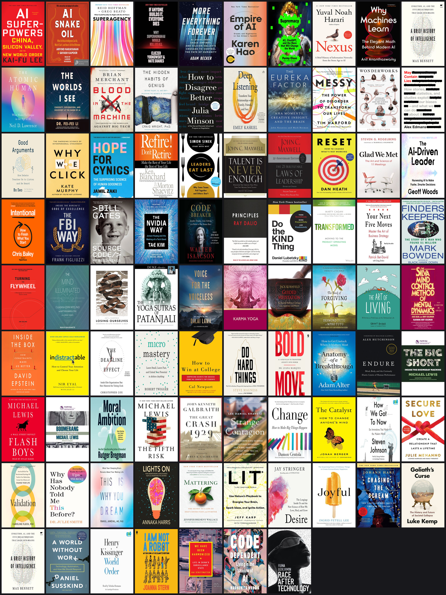
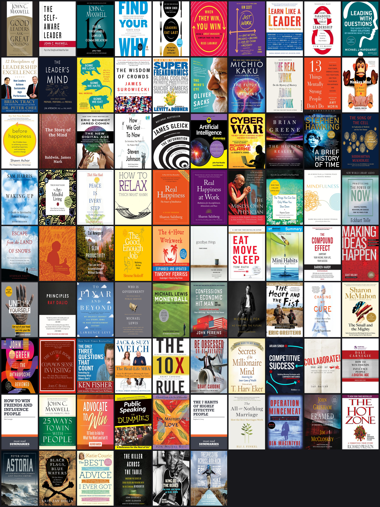

I read 200+ books. An agent picked my next 100 from my library shelf.
I wanted recommendations constrained to books I can borrow now, not generic "you might also like" suggestions. So I built a pipeline that combines my reading history with Libby/OverDrive catalog data, then uses an LLM as a final curator.
Code: github.com/jnsuryaprakash/book-recommender
At a glance
Runtime: ~12 minutes local compute + ~30 seconds LLM call. LLM token cost: <$0.40 end-to-end.
Output
The pipeline produced themed, borrowable recommendations and stayed inexpensive to run (under $0.40 in LLM token cost end-to-end).

Plano output: 87 picks across 9 themes. Sample themes include AI futures and critiques, decision-making, leadership, founders and operators, and contemplative wisdom.

Bentonville output: same pipeline, different catalog, different final mix.
Technical approach
Inputs: (1) my historical reading list, (2) Libby catalog data for a specific library. Output: themed recommendations where every result maps to a real, borrowable title.
1) Ingest taste signal
Parse Blogger HTML list, keep English section, enrich each title via Open Library and Google Books fallback.
telugu_idx = re.search(r"\btelugu\s*:?\s*<", body_html, re.I)
english_html = body_html[: telugu_idx.start()] if telugu_idx else body_html2) Crawl Libby/OverDrive catalog
Libby web traffic revealed usable Thunder API params. Key gotcha: subject must be numeric and formats are strict (`ebook-overdrive`, not `ebook`).
params = {
"format": "ebook-overdrive",
"subject": "111", # nonfiction
"language": "en",
"perPage": 96, # max
"page": page,
}3) Local semantic ranking (TF-IDF + cosine)
For this corpus size, sparse TF-IDF vectors are fast, cheap, and good enough to produce a strong top-N candidate set.
vec = TfidfVectorizer(
max_features=40_000,
ngram_range=(1, 2),
stop_words="english",
min_df=2,
max_df=0.85,
sublinear_tf=True,
)4) Multi-interest scoring with k-means centroids
Instead of one global user centroid, cluster read vectors (k=6) and score candidates by max similarity to any centroid. This preserves niche interests.
km = KMeans(n_clusters=6, random_state=42).fit(read_vecs.toarray())
centroids = l2_normalize(km.cluster_centers_)
sims = cat_vecs @ centroids.T
scores = np.asarray(sims).max(axis=1)5) LLM rerank for curation quality
Feed top 300 candidates + taste profile to Claude with hard constraints: exact title IDs only, max per author, themed grouping, one-line rationale per pick.
What mattered in practice
- Undocumented API params caused repeated 400 errors until exact values were discovered.
- HTML marker variance in the source list required robust regex handling.
- Sparse-dense multiplication type behavior needed explicit
np.asarray()before reduction.
Run it yourself
git clone https://github.com/jnsuryaprakash/book-recommender
cd book-recommender
python3.11 -m venv .venv && source .venv/bin/activate
pip install -e . && cp .env.example .env
python -m scripts.run --library <YOUR_KEY>
open output/<YOUR_KEY>/next_100.html